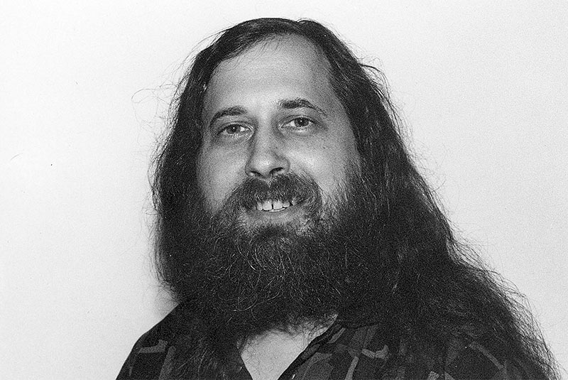

코드 비공개 문화가 자리를 잡아가자 무료로 소스코드를 쓰고자 하는 이들이 반발하기 시작했다. 이들은 스스로를
‘헤커’라도 불렸는데 리처드 스톨만은 프로그램을 타인이 수정할 수 없게 하여 독점 하는 것은 윤리적으로 잘못 된
것이라며 자유 소프트웨어 운동을 전개하였다. 그는 1979년 AT&T가 UNIX 소스코드를 비공개로 전환하자 많은 이
가 쓸 수 있는 자유소프트웨어 운영체제를 만들기로 결심한다. 1983년 GNU 프로젝트라는 이름으로 시작한 이 계
획은 컴파일러, 디버거 등등을 만들기 시작했다. 이후 이 프로젝트는 LINUX의 전신이 된다. 1985년에는 GNU선언
문을 발표하고 자유소프트웨어재단을 설립했다. 자유소프트웨어재단은 GNU프로젝트를 인적,금전적으로 지원하
는 재단이었고 오픈소스의 철학적 기술적 토대를 마련했다. 1989년에는 자유 소프트웨어 라이선스(GPL)을 발표
하는데 이는 오픈소스의 법률적 토대가 되었다

1980년대의 오픈소스 커뮤니티
오픈소스에서 빠질 수 없는 것이 개발자 커뮤니티이다. 오픈소스의 개념자체가 협업으로 더 나은 코드를 만드는 것
에 있기 때문이다. 그렇기에 커뮤니티는 소통 플랫폼을 중심으로 형성되었다.
1969년 이전
인터넷이 개발되기 전이기 때문에 Mutics에 연구소 직원 여러명이 접속하여 소스를 공유하거나 혹은 파일을 자기
테이프에 복사하여 정해진 날짜에 실제로 만나 그것을 공유하는 방식이었다. 유명한 사례로 실리콘밸리의 the
coffeenet이라는 다방에 매주 화요일에 개발자들이 모여 소스를 공유하던 것이 있다.
1969년 이후
ARPAanet의 보급으로 원거리에서 소스를 주고받을 수 있게 되었다. 초기에는 위의 4개 대학에서 시작했지만
1970년 13개 노드, 1971년 18노드, 1972년 29노드,1975년 57노드, 1981년엔 213개까지 늘어났고 개발 당시 군용
목적에서 점점 벗어나기 시작했다. 초기엔 군사용으로 코드를 주고받았지만 점차 노드가 늘어나며 연구진들은 군
사 연구용이 아닌 여러가지 코드들을 몰래 교류하기 시작했다. 나중에는 군사용과 대학끼리 공유 회선을 분리했다.
BBS(bulleten board system)는 그 교류를 편하게 하기위해 개발된, 사용자가 연결할 수 있는 터미널 프로그램을 제
공하는 시스템 소프트웨어이다. 소프트웨어 데이터 업로드와 다운로드 뉴스(그 뉴스가 아닌 사용자 간의 메시지)
및 게시판 읽기, 메시지 교환 등을 할 수 있었고 초기 인터넷인 만큼 개발자들 사이에 이용되어 코드의 배포, 교환
피드백에 이용되었다. 여러가지 버전이 개발되었는데 Community Memory라는 프로그램이 1973년 개발된 이후
주로 쓰였다. Tom Truscott과 jim ellis의 usenet도 1980년에 나와 많이 사용되었다. 1983년에는 UUCPnet, 1984년
에는 WWIV가 wayne bell에 의해 개발된 이후 많이 이용되었다.